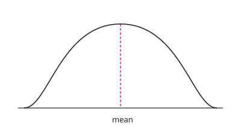

<script src="/assets/redirect.js"></script>
<section class="theory" data-section="S2-3.3">
<h2>3.3 Working with normal distributions</h2>
<p class="src">Based on Cambridge International AS &amp; A Level Mathematics: Probability &amp; Statistics 2 Coursebook, Chapter 3, printed pp.61-63. Printed pages were read from S2.pdf (printed 61-63 = PDF 73-75). Own wording and new numbers.</p>
<p class="key-words"><strong>Key words:</strong> <em>linear combination of normal distributions</em></p>
<p>A <strong>linear combination of normal distributions</strong> stays normal. If \(X\) is normal, then so is any linear function \(aX+b\). If \(X\) and \(Y\) are independent and each is normal, then any linear combination \(aX+bY\) is also normal, with
\[\operatorname{E}(aX+bY)=a\operatorname{E}(X)+b\operatorname{E}(Y),\qquad \operatorname{Var}(aX+bY)=a^2\operatorname{Var}(X)+b^2\operatorname{Var}(Y).\]
A probability such as \(\operatorname{P}(aX+bY&lt;k)\) is then found by standardising to a standard normal variable, once the mean and variance of \(aX+bY\) are known.</p>
<figure>

<figcaption>A linear combination of independent normal random variables is itself normal, so probabilities are read from the standard normal table after standardising.</figcaption>
</figure>
<div class="worked-example"><h4>Worked example 1</h4>
<p class="src">Book: printed pp.61-63. New integer numbers.</p>
<p>\(X\sim\operatorname{N}(6, 4)\) and \(Y\sim\operatorname{N}(2, 5)\) are independent. Find \(\operatorname{E}(3X-Y)\).</p>
<ol class="steps">
<li>\(\operatorname{E}(3X-Y)=3\times 6-2=16\). <span class="mark">A1</span></li>
</ol></div>
<div class="worked-example"><h4>Worked example 2</h4>
<p class="src">Book: printed pp.61-63. New integer numbers.</p>
<p>With the same \(X\) and \(Y\), find \(\operatorname{Var}(3X-Y)\).</p>
<ol class="steps">
<li>\(\operatorname{Var}(3X-Y)=9\times 4+5=41\). <span class="mark">A1</span></li>
</ol></div>
<h3>Common mistakes</h3><ul>
<li>Using \(\operatorname{Var}(3X-Y)=3\operatorname{Var}(X)-\operatorname{Var}(Y)\) instead of \(9\operatorname{Var}(X)+\operatorname{Var}(Y)\).</li>
<li>Standardising a probability without first finding both the mean and the variance of the linear combination.</li>
</ul>
<div class="quick-check" data-q="QC1">
<h4>Quick check 1</h4>
<p>\(X\sim\operatorname{N}(6, 4)\) and \(Y\sim\operatorname{N}(2, 5)\) are independent. Find \(\operatorname{E}(3X-Y)\).</p>
<details><summary>Show answer</summary>
<ol class="steps">
<li>\(3\times 6-2=16\). <span class="mark">A1</span></li>
</ol>
<p class="final">\(16\)</p>
</details>
</div>
<div class="quick-check" data-q="QC2">
<h4>Quick check 2</h4>
<p>\(X\sim\operatorname{N}(6, 4)\). Find \(\operatorname{Var}(3X)\).</p>
<details><summary>Show answer</summary>
<ol class="steps">
<li>\(9\times 4=36\). <span class="mark">A1</span></li>
</ol>
<p class="final">\(36\)</p>
</details>
</div>
<div class="quick-check" data-q="QC3">
<h4>Quick check 3</h4>
<p>\(X\sim\operatorname{N}(6, 4)\) and \(Y\sim\operatorname{N}(2, 5)\) are independent. Find \(\operatorname{Var}(3X-Y)\).</p>
<details><summary>Show answer</summary>
<ol class="steps">
<li>\(9\times 4+5=41\). <span class="mark">A1</span></li>
</ol>
<p class="final">\(41\)</p>
</details>
</div>
<h3>Past paper</h3>
<p class="src">9709/73/M/J/12 Question 2, 5 marks. Official QP and official MS. The official MS labels the working as 2(i), but the question is a single 5-mark part. The question number was checked against the official QP.</p>
<p>The independent random variables \(X\) and \(Y\) have the distributions \(\operatorname{N}(6.5, 14)\) and \(\operatorname{N}(7.4, 15)\) respectively. Find \(\operatorname{P}(3X-Y&lt;20)\). [5]</p>
<details><summary>Show official scheme</summary>
<ol class="steps">
<li>\(\operatorname{E}(3X-Y)=12.1\). Official MS: B1. <span class="mark">B1</span></li>
<li>\(\operatorname{Var}(3X-Y)=9\times 14+15=141\). Official MS: B1. <span class="mark">B1</span></li>
<li>\((20-12.1)/\sqrt{141}\) \(=0.665\). Official MS: M1 (continuity correction is not used). <span class="mark">M1</span></li>
<li>\(\Phi(\)their \(0.665)\). Official MS: M1, correct area consistent with their working. <span class="mark">M1</span></li>
<li>\(0.747\) (3 s.f.). Official MS: A1. <span class="mark">A1</span></li>
</ol></details>
</section>
